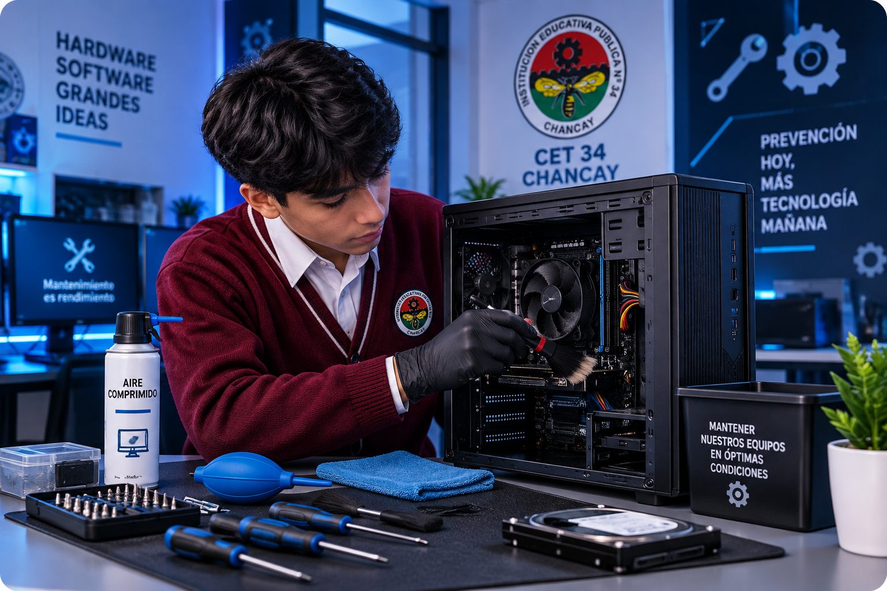
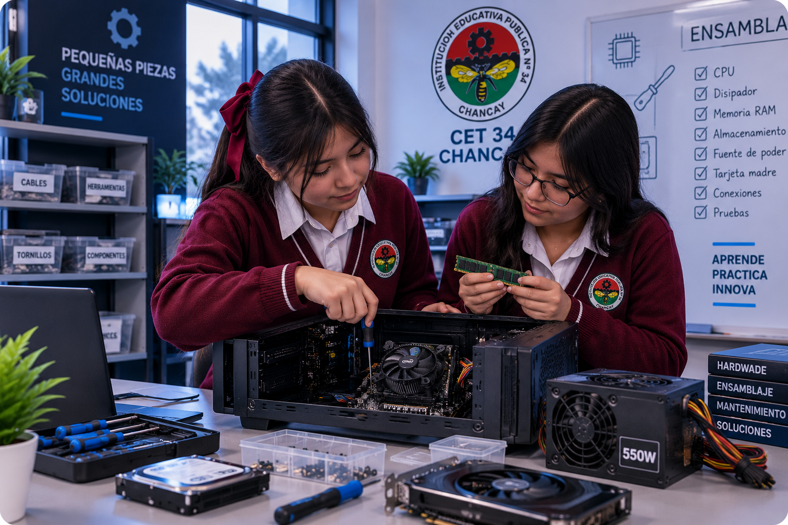
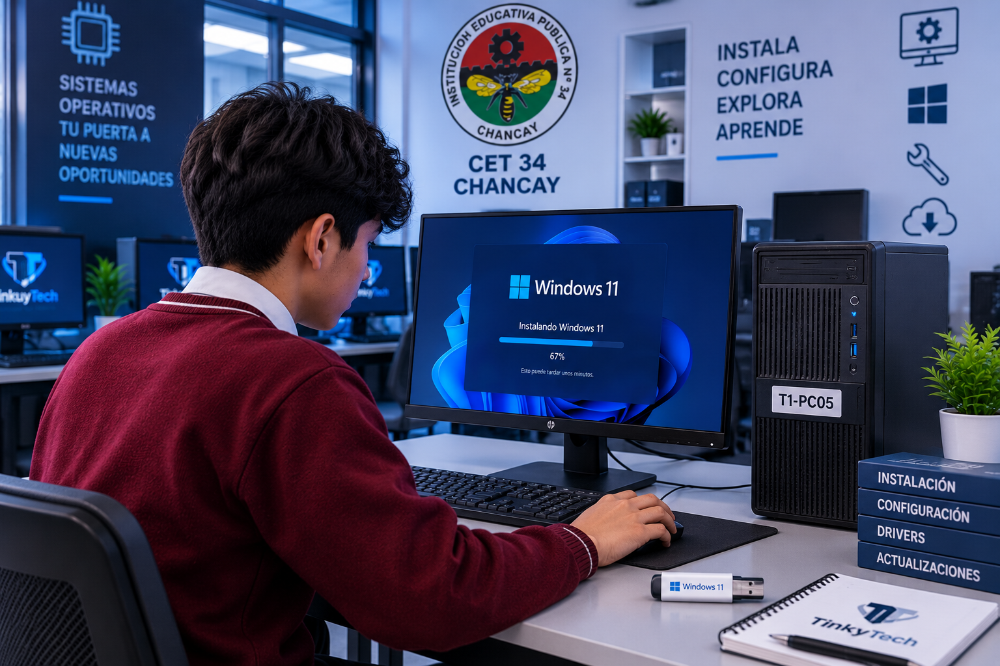
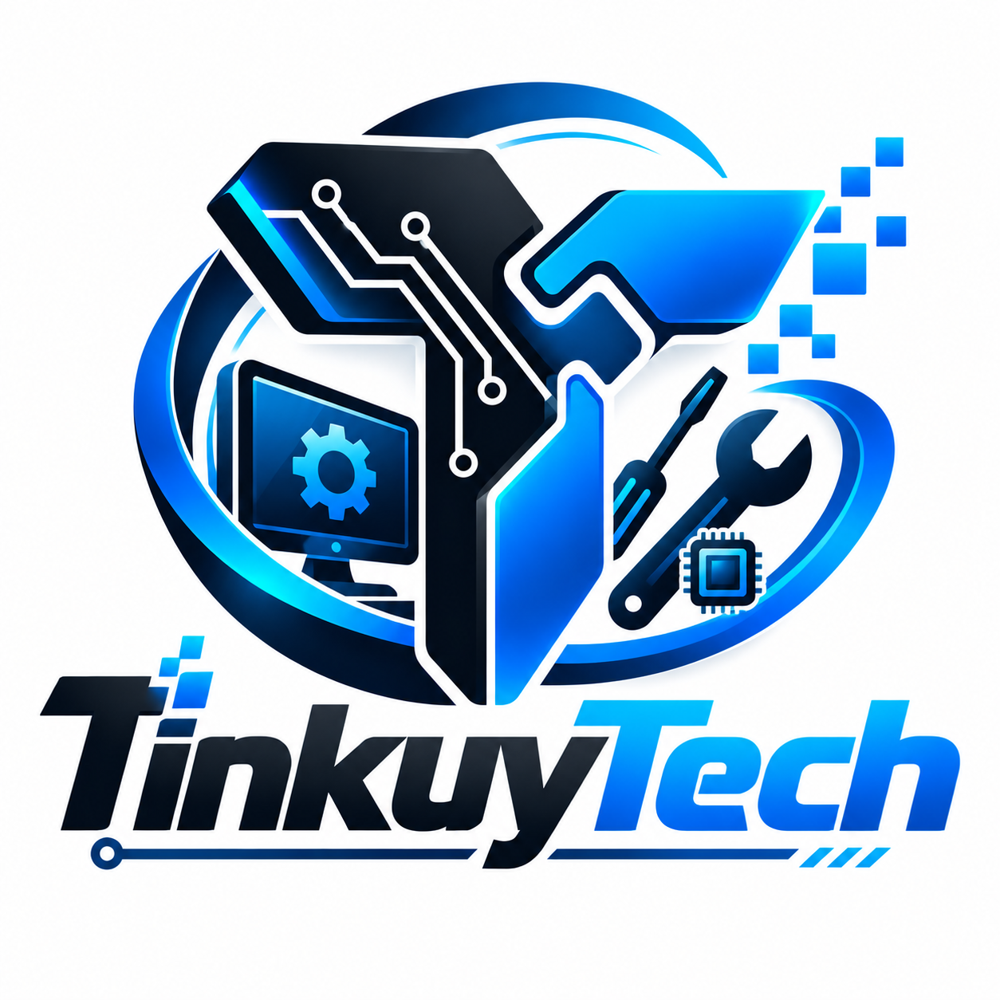

Respuesta ágil
Atención optimizada para reducir tiempos de inactividad.
SOPORTE TÉCNICO ESPECIALIZADO
Expertos en repotenciación, mantenimiento preventivo y correctivo. Aseguramos el máximo rendimiento de tus herramientas digitales con garantía y profesionalismo.
PORTAFOLIO DE SERVICIOS
Soluciones integrales diseñadas para prolongar la vida útil y potenciar la velocidad de tu infraestructura tecnológica.
Limpieza profunda de componentes físicos, gestión térmica y prevención de fallas de hardware a corto y largo plazo.
Solicitar ahoraActualización estratégica de hardware (SSD, Memoria RAM) para multiplicar la velocidad y capacidad de tu computadora.
Cotizar mejoraFormateo seguro, despliegue de sistemas operativos y optimización de rendimiento desde la base del software.
Agendar servicioEliminación de malware, protección de datos sensibles y configuración de defensas contra amenazas digitales.
Proteger equipoFLUJO DE TRABAJO
Un proceso estructurado para garantizar resultados efectivos, rápidos y sin sorpresas en la facturación.
Registro detallado de los síntomas y necesidades del equipo mediante nuestros canales oficiales.
Evaluación técnica exhaustiva en nuestro laboratorio para localizar la raíz exacta del problema.
Presentación clara del diagnóstico, el presupuesto y los procedimientos requeridos para tu aprobación.
Reparación bajo estándares profesionales seguida de rigurosas pruebas de estrés para asegurar estabilidad.
CASOS DE ÉXITO
Un vistazo a las intervenciones técnicas realizadas por nuestros especialistas en el laboratorio.

Limpieza física integral, correcta gestión de cables y cambio de pasta térmica de alto rendimiento para controlar temperaturas.

Selección cuidadosa de componentes y armado profesional garantizando compatibilidad y un flujo de aire óptimo en el chasis.

Instalación limpia de Windows, configuración de particiones, actualización de drivers y optimización de servicios en segundo plano.

SOBRE LA EMPRESA
En TinkuyTech somos un equipo apasionado por la tecnología, dedicado a resolver desafíos informáticos complejos mediante soluciones prácticas, éticas y eficientes.
Nuestra visión trasciende la simple reparación: buscamos educar a nuestros clientes en el uso responsable de la tecnología. Nos enorgullece ser un proyecto impulsado por el talento joven y la formación técnica de excelencia del CET 34 de Chancay.
Proveer soporte informático confiable que garantice la continuidad y eficiencia de las herramientas digitales de nuestros clientes.
Ética profesional, transparencia en diagnósticos, vanguardia técnica y compromiso total con el resultado final.
ATENCIÓN AL CLIENTE
Déjanos tus datos o escríbenos directamente. Un técnico especializado de TinkuyTech analizará tu caso y te brindará una respuesta inmediata.
Centro de Soporte WhatsApp Respuesta en menos de 15 minutosLaboratorio Principal: Plaza de Armas Chancay (Expoferia CET 34)
Horario de Operaciones: Lunes a Viernes · 8:00 AM - 5:00 PM
Correo Corporativo: soporte@tinkuytech.com